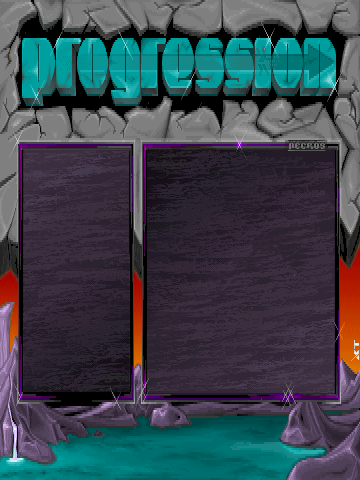
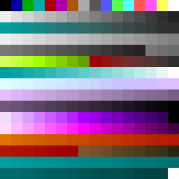
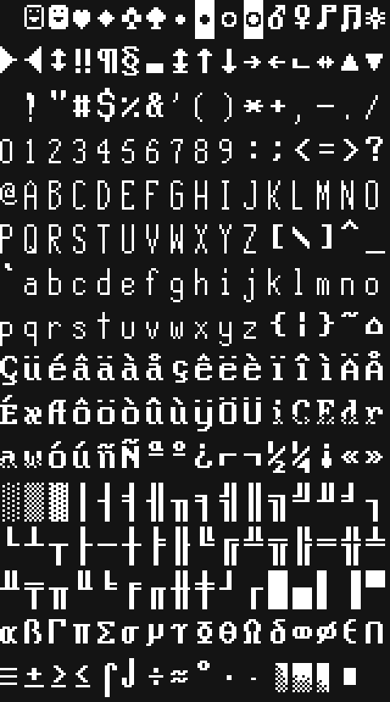
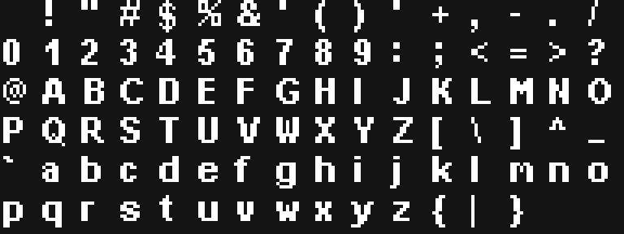
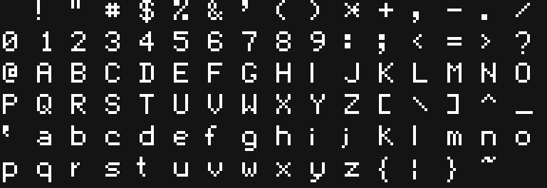

Progression is a music disk, not a demo:
PROG.EXE (114 KB, Watcom C 10.0 + PMODE/W 1.16 + DSIK 2.05
sound library) plays six ScreamTracker 3 modules (METROPLX,
CROSSING, COLLAGE, POINT,
ISOTOXIN, GREYNOTE) behind one static picture.
There is no scene, no 3D, no per-frame animation. What
the program draws is a menu, a text panel, a progress bar and a ticker.
This write-up is therefore short: it describes exactly those, plus the
screen mode they live in. Nothing here is guessed; the addresses are
those of the 32-bit code object (0x10000..., see
REVERSE.md), the listings are from
_re/obj1.asm / _re/obj2.bin (the unpacked LE
objects dumped by tools/le.py).
The mode setter is a 0xA7-byte stub at 0x30000. It does
int 10h mode 13h and then reprograms the VGA registers by
hand:
30000: mov ax,0x13 / int 0x10 ; start from mode 13h
3000a: mov ax,0x604 ; out 0x3c4,ax ; sequencer reg 4 = 06 : chain-4 off, odd/even off ("unchained", mode X)
30010: mov ax,0xf02 ; out 0x3c4,ax ; map mask = all four planes (clear VRAM)
30024: mov al,0xe7 ; out 0x3c2,al ; misc output: 480-line timing (negative sync)
30031: mov dx,0x3d4 ... and al,0x7f ; clear CRTC reg 0x11 bit 7 (unlock regs 0-7)
30040: out 0x3d4,ax with ax = 6b00 5901 5a02 8e03 5e04 8a05 0d06 3e07 4009 ea10 ac11 df12 2d13 0014 e715 0616 e317Decoding the CRTC values that matter (VGA CRTC register meanings are standard, not derived from this binary):
0x59 = 89: 90 character clocks displayed, i.e. 90
x 4 planes = 360 pixels per line.0xdf plus the overflow bit in reg 7
(0x3e, bit 1) = 0x1df = 479: 480
lines.0x2d = 45 words: logical line pitch 90
bytes per plane.0x40: max scan line = 0 (no line doubling, unlike
mode 13h).So the screen is 360x480x256, a mode with 1:1 pixel data but 480-line
timing on a 4:3 monitor, hence pixels about 1.78x wider than tall (the
port, and REVERSE.md, say this). The port does not
emulate any of the CRTC; it knows the geometry only from these
numbers: the canvas is 360x480 and the CSS box is
aspect-ratio: 4 / 3 (web/css/site.css), which
is the aspect-ratio requirement of the brief. Because the original draws
a 240-line look into 480 lines, the menu font is drawn with every row
doubled (section 3).
Everything is drawn into a shadow buffer (360x480
bytes at 0x48b8c) and copied to the four planes by
0x10028 (see the asm write-up). The port keeps only the
shadow buffer (buf in web/js/screen.js) and
paints it with the palette; the plane copy is a no-op for it.
GFX.DAT is an mhwanh file: a 32-byte header
(the width 0x0168 = 360 and height 0x01e0 = 480 are in it), a 768-byte
RGB palette, then 360x480 = 172 800 raw palette indices (204 distinct
values are used). The loader (0x108d3) puts the palette and
the picture in memory; 0x10985 (screen draw) copies the
whole picture into the shadow buffer with one memcpy of
0x2a300 = 172 800 bytes. The port does the same:
export function loadGfx(dat) {
return { pal: dat.subarray(32, 32 + 768), bg: dat.subarray(32 + 768, 32 + 768 + W * H) };
}
draw() { this.buf.set(this.g.bg); /* then menu + info panel */ }The palette upload is 0x1088c: it sets the DAC write
index with out 0x3c8 then writes 768 bytes to
0x3c9, each v >> 2 (the VGA DAC is 6
bits). app.js expands those 6-bit values back to 8 bits for
the canvas. The picture's text colours are plain palette entries chosen
by the program:
n (13 lines): colour
0x80 + n. The palette entries 0x80..0x8c in
GFX.DAT form a smooth ramp from (231,187,255) down to
(139,111,155), so the panel text gets a vertical gradient with
no per-pixel work: it is the palette, not the code, that does
it.The fade routines (0x10080, 0x10124) are in
the binary but dead code (nothing calls them; REVERSE.md),
so there is no fade in the port either.
| file | size | layout | decoded by |
|---|---|---|---|
GFX.DAT |
173 600 B | 32-byte mhwanh header (width 360 and height 480 are
stored big-endian at offsets 8 and 10; offset 12 holds 0x0100) at 0;
palette at offset 32, 768 B (256 x RGB, 8 bit);
pixels at offset 800, 172 800 B = 360x480 raw indices,
row-major, no compression |
loadGfx (screen.js); original loader
0x108d3 |
VGA.FNT |
4096 B | 256 glyphs x 16 bytes, one byte per row, msb = leftmost pixel; 253 of the 256 glyphs are non-empty | textVga; original 0x1032e |
FONT2.FNT |
1060 B | 4-byte header (first char 0x20, height 10), then 96 records of 10 row bytes + 1 width byte (chars 0x20..0x7f); rows lsb-first | loadFnt + textFnt; original
0x101c5 / 0x104cb |
FONT.FNT |
964 B | same format, first char 0x20, height 9, 96 records; loaded by the EXE but never drawn | not used by the port |
Colours: the palette has 256 entries, of which 225 are distinct RGB
values; the picture uses 204 distinct indices (maximum index 254). The
shadow buffer stores indices, never RGB; the canvas applies the palette
at paint time. Previews, rendered for this write-up straight from the
shipped files (figures/; the picture is at its native
360x480 pixels, not aspect corrected):





(_re/gfx.png, made earlier by the project, is another
render of the GFX.DAT picture.)
Both text routines are plain bit-test loops writing one byte per set pixel into the shadow buffer; the port mirrors them function for function.
VGA text, 0x1032e (info panel, ticker):
glyphs from VGA.FNT (256 x 16 bytes, one byte per row, msb
first), 8 wide, drawn on a 6-pixel pitch. The shipped
VGA.FNT is a narrow 5-pixel face, so successive glyphs
touch their neighbours' empty column instead of overlapping. Only set
bits are written (transparent background, so the picture shows
through):
export function textVga(buf, vga, s, x, y, col) {
for (let i = 0; i < s.length; i++) {
const ch = s.charCodeAt(i);
for (let c = 0; c < 8; c++) for (let r = 0; r < 16; r++)
if (vga[ch * 16 + r] & MASK[c]) buf[(y + r) * W + x + c + 6 * i] = col;
}
}Menu font, 0x104cb:
FONT2.FNT is a proportional bitmap font (4-byte header
[first char, ?, height, ?], then per glyph
height rows and one width byte, lsb
first). The routine writes every pixel twice, on rows
y+2r and y+2r+1, which is how a
10-row font fills the 480-line mode; a space advances 6 pixels, other
glyphs advance their own width byte. FONT.FNT is loaded by
the original but never used.
for (let r = 0; r < font.h; r++)
for (let c = 0; c < w; c++)
if (b & MASK_LSB[c & 7]) { buf[(y + 2*r)*W + x + ofs + c] = col; buf[(y + 2*r)*W + W + x + ofs + c] = col; }0x10985 draws the six titles at x = 25, y = 160 + 40 i
(the listing shows y = i*5*8 + 0xa0), colour 9, then
redraws entry 0 in colour 15 and the 13 info lines of song 0 at x = 148,
y = 154 + 16 n. Selecting another song (0x10a66) redraws
the old entry in 9, the new one in 15, restores the panel rectangle (x
148..340, y 154..380) from the back-drop copy and writes the new text.
The texts (menu, 6 x 13 info lines, 30 ticker lines) live in the data
object; tools/extract_strings.py dumps them to
web/assets/strings.json.
The program reprograms the PIT with divisor 0x4295
(about 70 Hz) and installs the callback 0x105fe. After
calling the DSIK library (call 0x12174) it increments a
sub-counter and, past 70, bumps a "seconds" counter:
1060f: mov edx,[0xa44f4] / inc edx / mov [0xa44f4],edx
1061c: cmp edx,0x46 / jng skip ; 0..70 : 71 ticks per "second"
10621: mov [0xa44f4],0 / inc [0xa44f0] ; seconds++The drawing happens in the idle loop (0x10d3b...), not
in the interrupt, keyed on that counter:
200 * order / numOrders. The two player fields read are the
current order ([player+0x60a]) and the song length in
orders ([player+0x60b]). The bar is
order-granular, not sample-accurate: it moves in steps of
200/numOrders pixels.textVga centred on x = 180 (the port:
180 - 3 * s.length, 6 px per char), colour 11, and the
message index wraps at 30.counter++
(0x10e0a...), so the same counter value is not tested twice
and the redraws drift apart from the pure "every 6th / 25th second"
schedule. The port keeps this quirk (timer70() in
screen.js).The seconds counter is a UI counter only: it is not the music clock. DSIK plays on its own interrupt.
tools/verify_screen.py runs the EXE's own
0x10985 (screen draw) and 0x1032e (VGA text)
under Unicorn on the loaded objects;
tools/verify_screen.mjs compares
web/js/screen.js to the dump: 0 differing pixels for the
initial screen and for a ticker line (per REVERSE.md;
re-run both to confirm). The menu font routine 0x104cb, the
progress bar and the redraw schedule are ported from the same
disassembly but are not part of that automated comparison.requestAnimationFrame with an accumulator, not from a PIT
interrupt.